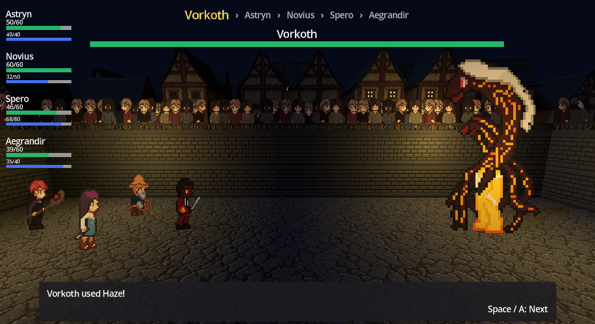

How It Works
Bosses don't run off a fixed script. Vorkoth's fight has two phases: in phase 1 (100 HP) he behaves like a normal enemy, and once he transforms, phase 2 (300 HP) hands control to the boss AI. On his first phase 2 turn he is forced to open with Smoke, and from then on, every turn, the AI scores its full move list against every valid target and picks from the strongest options rather than following a scripted rotation. It's a utility AI: each move/target pairing is rated across several weighted factors, combined into a single score, and then scaled by that move's accuracy, so a powerful move that's unlikely to land is worth less than a reliable one. This utility system is boss-specific; everything below describes how a boss thinks, not every enemy on the field.
Regular Enemies
Boss encounters are the exception, not the rule. Every other enemy, and Vorkoth himself during phase 1, skips the scoring above entirely: it picks a uniformly random living party member to attack, with a uniformly random move from its own move list, no threat, health, or type awareness involved. The one rule it still shares with the boss AI is Taunt: if a party member is Taunting, targeting is forced onto them the same way it is for a boss (with several taunters, a regular enemy picks one at random, while the boss picks by score).
Weighing Its Options
Every turn opens with a weighted coin flip between two move pools: attacking moves (60% weight) and status moves (40% weight), so the boss doesn't only ever swing for damage. If the chosen pool has no valid moves that turn, it falls back to the other one instead of doing nothing.
Those weights don't stay fixed. Once the boss drops below half of its max HP, its bucketing priority shifts to 80% attacking moves and only 20% status moves, so the second half of the fight is far more aggressive than the first. The boss stops setting up and starts trying to finish the party off.
Attacking moves are scored on four factors: Attack Desire (how much damage the move is likely to deal relative to the target's max HP), Threat (how dangerous that target's own stats look next to the boss's remaining HP), Health Desire (a curve that makes the boss lean more cautious the lower its own HP drops), and Defensive Desire (a similar pull toward safer options under pressure). These combine into a weighted score, with Attack Desire counting most, then get scaled by the move's accuracy. Status moves use a lighter model of their own: baseline credit for actually applying a status or hitting the whole field, a bonus if the target isn't already affected by anything, and a bonus if the target is at or below 35% HP, and a small penalty if the move's accuracy is low. A stat-resetting move like Smoke, which never misses, gets weighted heavily the instant a party member is sitting on a buff, so the boss reliably punishes stacked buffs instead of ignoring them.
Learning As It Fights
The boss isn't told anyone's typing up front, so it doesn't start a fight already knowing what a party member is weak or resistant to. It finds out the same way a player would: by landing hits and watching what happens. Every successful damaging attack feeds a per-target, per-type memory of whether that matchup came back weak, resisted, immune, or neutral, and anything unproven is treated as neutral until it's been tested. That memory is scoped to the current fight and carries through the phase transition. Since only phase 2 feeds it, the learning effectively begins once the boss AI takes over.
Staying Unpredictable
Rather than always taking the single highest-scoring play, the boss ranks its top three attack combinations (top two when it picks a status move) and makes a weighted random pick among them, favoring the strongest option without being fully deterministic. There's one hard override to all of it: if a party member is Taunting, the boss is locked into targeting them, regardless of how any other target scores.